認識目前的主畫面
主畫面用來查看本輪 Log 結果與提供 KVM 讀取。操作員選「專案＋機型」，工程師維護配置；開始監控不會啟動 ATE。本文依目前原始碼與實際 Tk 測試畫面更新。
除「實機結果對照」的歷史照片外，新圖片均由自動測試開啟實際 App 產生。測試使用隔離資料、受控 Log／故障；SN、路徑、長訊息為範例。這些圖片不代表產線實測或實體 KVM 取像驗收。
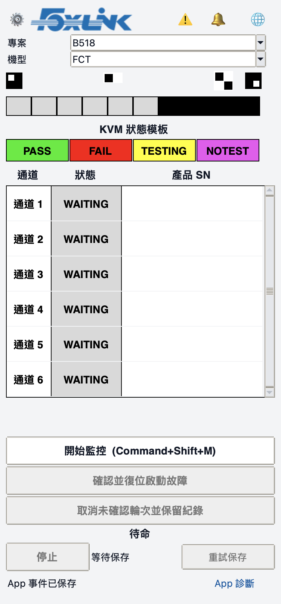
| 區域 | 用途 |
|---|---|
| ⚙️ 設定 | 工程師配置、事件與 Session、輪次紀錄保存期限。 |
| ⚠️ 結果衝突 | 開啟待確認候選。數字是待處理提示；關閉視窗不會解決衝突。 |
| 🔔 通知／復原中心 | 查看警報、保存／封存失敗與恢復操作；數字可能同時包含不同待處理事項。 |
| 🌐 語言 | 切換繁體中文／English；已開視窗同步更新，狀態名稱、SN 與來源資料不改寫。 |
| 專案／機型 | 選擇工程師已準備的配置。機型是 DFU／FCT／BT 工站類型，不是產品型號。 |
| KVM 與明細 | 色帶與定位標記固定；最多 20 個位置，明細可捲動，容量外固定黑色。 |
| 開始／停止、保存重試、App 診斷 | 建立／停止本輪；依故障狀態重試保存，或開啟 App 診斷查看原因。 |
開始前確認
- 核對程式版本、專案與機型，確認 Log 目錄存在且可讀。
- 確認配置的容量、來源映射與實際治具一致；容量不等於本輪實際投入數量。
- 先處理上一輪待確認事項與啟動故障；保存失敗另外依復原中心處理。
- 確認 KVM 能看見固定看板。App 會在關鍵事件回到前景，但不永久置頂或強制鍵盤焦點。
每輪操作流程
- 在主畫面選專案與機型。沒有合適配置時，請工程師依下一節建立。
- 按「開始監控」，或 Command + Shift + M。啟動中／Log 準備中屬於 BUSY，來源基準尚未完成，不能據此啟動 ATE。
- 等待監控就緒，再開始測試機。本工具開始收集 Log 與 ATE 真正開測是兩個時點；TESTING／可信結果才是測試活動證據。
- 核對 Slot、SN 與狀態。只見一個 PASS 不等於整輪可交付；所有位置定案、同輪可靠且無待確認才可取用。
- 異常時依結果衝突、警報、取消或啟動故障復位指引處理。每次新輪都要明確再次開始，不會自動重測。
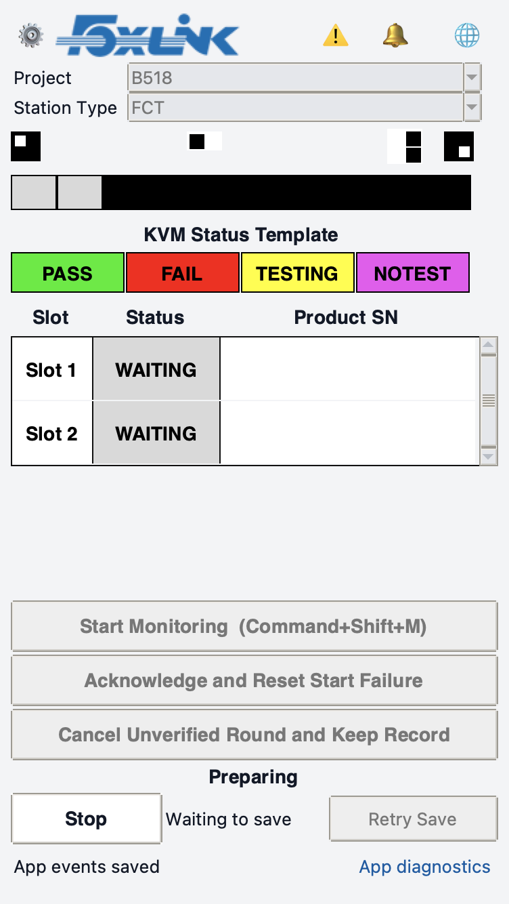
本次測試觀察：LI1 受控情境中，輪次快照與獨立狀態標記已進入監控，但底部文字仍可能保留 Preparing。此圖供比較通道活動與狀態標記；不可單靠底部文字判定可開測。若缺少可靠的本輪監控就緒確認，先暫停並回報。
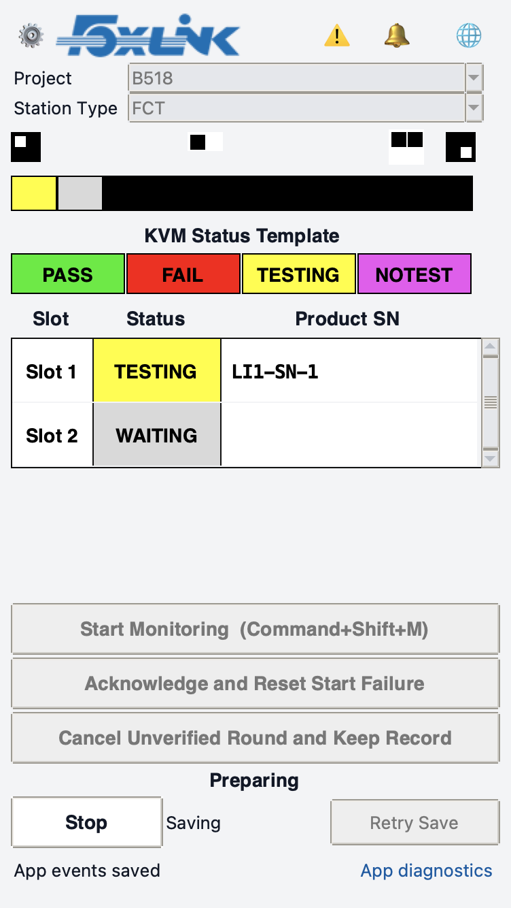
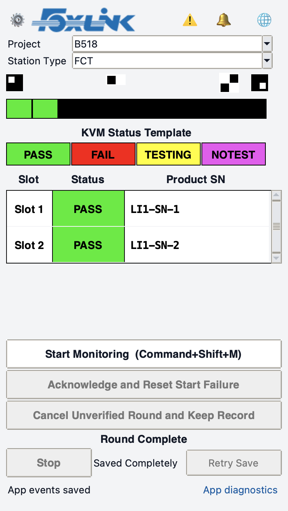
工程師配置：編輯、驗證與套用
⚙️ →「工程師配置」。配置包含專案、機型、測試平台、容量、來源位置映射、路徑及三種期限。不是原先只選工站和兩個路徑的設定頁。
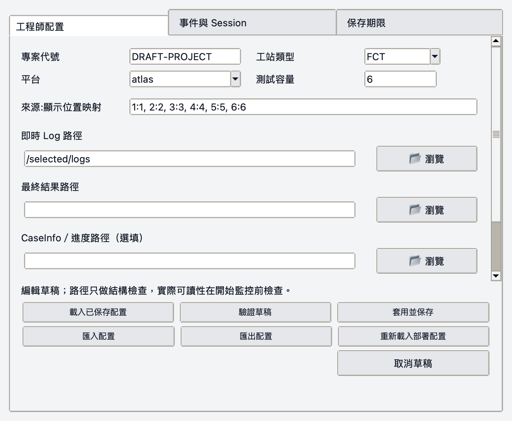
- 載入要修改的配置；核對專案／機型、平台與容量（1–20）。
- 設定來源位置到畫面位置的映射，例如 1:1, 2:2；依平台使用的來源編號配置，不能只照測試機畫面列號猜測。
- 按路徑旁的「選擇」，填入適用根目錄；設定開始等待、測試上限、整輪上限，皆為正整數秒。
- 先「驗證草稿」，再「套用並保存」；驗證成功本身不等於已保存。取消不套用草稿，保存失敗時原有效配置保留。
- 匯出可攜配置供工程部署；匯入後核對本機路徑並確認有效選擇。「重新載入部署配置」用於重讀已保存資料，修改前注意尚未套用的草稿。
每輪開始時固定配置快照；運行中修改配置不回頭改寫本輪。偏好與配置保存在 ~/Library/Application Support/B518LogSolution/preferences.json。
平台路徑與期限
以下是 B482 產線路徑範例，與自動測試畫面的隔離路徑不同。其他專案須依自己的部署選取。
| 平台／機型 | 即時來源 | 最終結果來源 |
|---|---|---|
| Atlas / DFU, FCT | /Users/gdlocal/Library/Logs/Atlas/active | /Users/gdlocal/Library/Logs/Atlas/unit-archive |
| BT | /vault/B482_RFTEST/TestData （CaseInfo 選填，建議填） | /vault/B482_RFTEST/TestData |
Atlas 的 active 與 final 都要正確設定；final 欄位的 unitest 提示不代表所有部署的實際目錄名稱。BT 的 TestData 與 CaseInfo 範例都選同一個 TestData 根目錄；若只有最終匯出檔，不會由複製時間推定 TESTING，也可能在結果抵達前達到開始期限。
| 期限 | 計算與處置 |
|---|---|
| 開始等待 | 從本輪受理開始計算，包含準備時間。整輪都無可信活動／有效結果時停止來源、未開始位置定案 NOTEST 並要求人工確認。部分位置已活動時，其餘未開始位置依期限定案 NOTEST，不額外判成整輪未開測。 |
| 測試上限 | 從各位置首次可信活動起算；COMPLETING 不重設。單一位置到期為 TIMEOUT，其他位置繼續。 |
| 整輪上限 | 從共同起點計算。仍有未完成位置時，停止來源並保留終態，其餘依活動證據定 NOTEST／TIMEOUT，建立整輪警報。已全部定案、只剩衝突時，不把它變成人工確認倒數。 |
內建／遷移後預設：DFU 開始 30／測試 480 秒；B518/FCT 120／480 秒；BT 30／240 秒。整輪預設 7200 秒。有效值以所選配置為準，工程師可調整。
Slot 結果與 KVM 判讀
| 狀態 | 意義與下一步 |
|---|---|
| WAITING | 尚無此位置的可信活動；檢查測試機是否開測及路徑。 |
| TESTING | 有可信活動，仍待最終結果；核對 SN。 |
| COMPLETING | 活動結束／等待最終結果的過渡狀態，可能短暫出現；不是 PASS。 |
| PASS / FAIL | 平台最終判定。FAIL 亦可能是 Atlas 活動結束前未讀到可信 SN；仍須核對整輪是否可交付。 |
| NOTEST | 平台明確無測試，或期限內未觀察到可信測試。應查看事件中的來源原因，不能全部當成同一種空料。 |
| TIMEOUT | 有活動的位置超時；不等於產品 FAIL。檢查 Log 是否遲到或 ATE 停住。 |
| STOPPED | 人員停止時尚未完成的位置。已完成 PASS／FAIL／NOTEST／TIMEOUT 保留。 |
KVM 新排列
每排固定十格：容量 1–10 顯示一排，11–20 顯示兩排；第一排 Slot 1–10，第二排 11–20。容量外格位固定黑色，明細捲動不會移動色帶與定位點。已取消舊七格模式，辨識端必須使用同版契約。
獨立狀態標記區分待命、準備中、監控中、待確認、正常完成與人工停止可交付。READY 不表示 PASS 或已有結果；BUSY 包含準備及待確認。產品色帶只顯示各位置結果，不能單靠全綠或保留的上一輪結果放行。
人工停止、取消與啟動故障復位
| 情況 | 應如何處理 |
|---|---|
| 已監控就緒後人工停止 | 按停止後保留終態，未完成改 STOPPED，整輪保留 manual_stop 原因。全部位置定案且無待確認時可以交付，但與正常完成不同；重工範圍由操作員決定。 |
| 準備中停止／無法確認本輪就緒 | 不能因畫面已有色塊就取用。待來源返回並完成必要處置後，明確取消本輪、保留紀錄，再開始新輪。 |
| 取消本輪 | 明確放棄後續交付並保留紀錄；不是刪除、改 FAIL 或自動重測。 |
| 啟動失敗 | 修正路徑／權限後按「確認並復位啟動故障」。結束失敗請求或取消已建立失敗輪次，保留證據；復位不會自行重啟 ATE。重開 App 後仍可依保存故障處理。 |
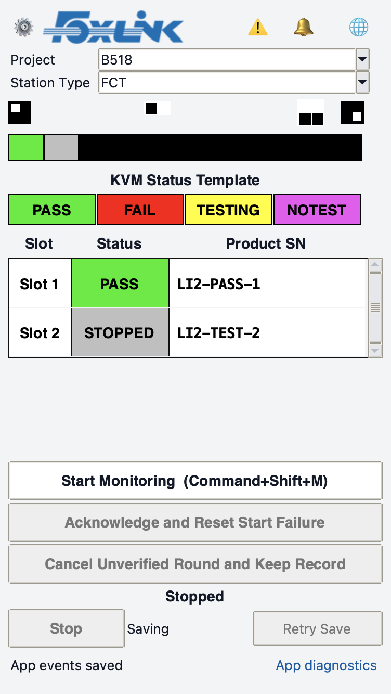
結果衝突與警報處置
同輪結果衝突
同一位置收到與已鎖定結果不一致的候選時，程式保留原結果並進入待確認。從 ⚠️ 開啟清單，選擇候選後核對摘要比較、SN、狀態、來源時間、完整檔案路徑與診斷。來源檔名相同不代表來源相同；必要時展開／捲動原文。
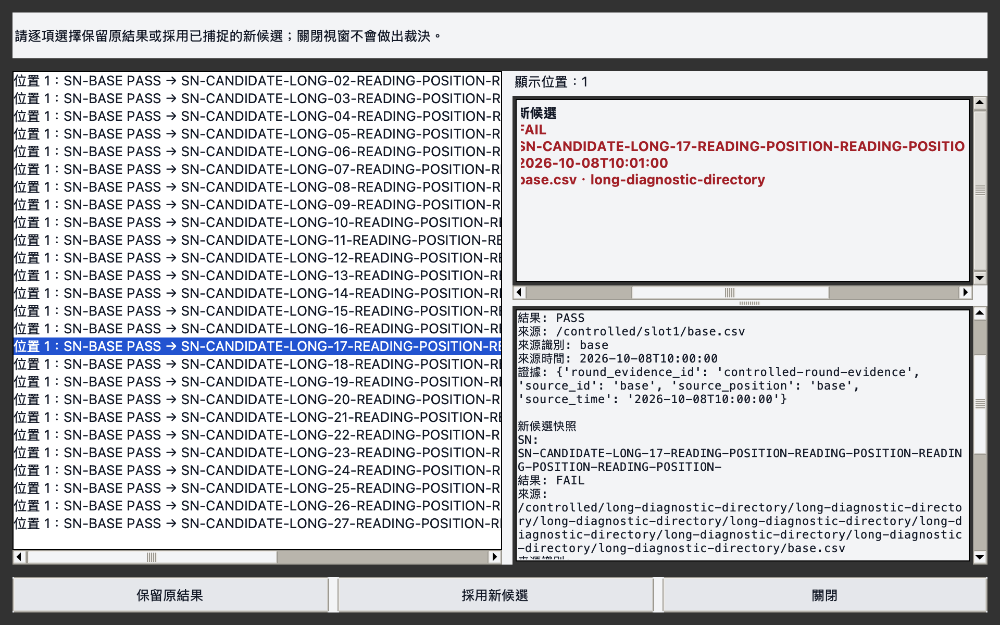
- 先確認選中的是要處理的候選；多筆候選須逐筆核對。
- 可信且屬於本輪才採用新候選；否則保留原結果。缺少可靠同輪證據時不能強制採用，按鈕會依條件停用。
- 關閉衝突視窗只暫時收起，⚠️ 可重開；不會自動放行。
整輪警報
開始期限內完全無活動，或整輪上限到期仍有未完成位置，會停止來源並建立警報。這不直接證明 ATE 硬體故障。先看原因及各位置結果，排除問題後明確按「確認」。來源尚在準備、位置尚未定案時確認可能停用。確認只處理警報，不會替你解決其他衝突，也不會啟動新輪。
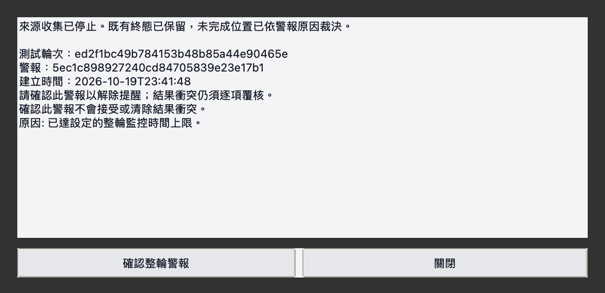
通知、保存失敗與復原中心
按 🔔 開啟復原中心。通知數不只代表警報，也可能包含 Session、稽核或封存待恢復項目；請讀取各頁籤的原因與可用操作。關閉視窗不等於確認，重開仍保留待辦。
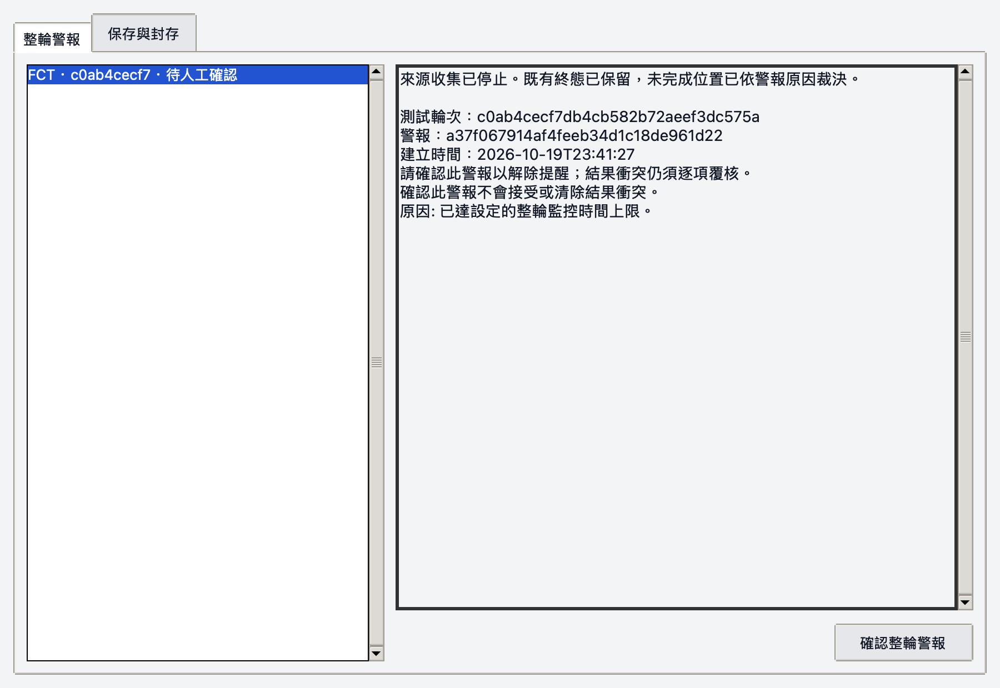
- 警報頁：核對 round_id 與原因；確認只解除該筆警報。
- 保存／封存頁：選擇失敗項目，看診斷後重試。保存完整性與結果是否可取用分開判斷，不能只看 Slot 顏色。
- 重試成功後核對狀態；仍失敗時保留視窗與錯誤資料，不要用新輪蓋掉問題。
- 關閉 App 會等待必要保存；若保存失敗會留在可重試的關閉畫面，也可取消關閉回到處理。取消關閉不是取消輪次。
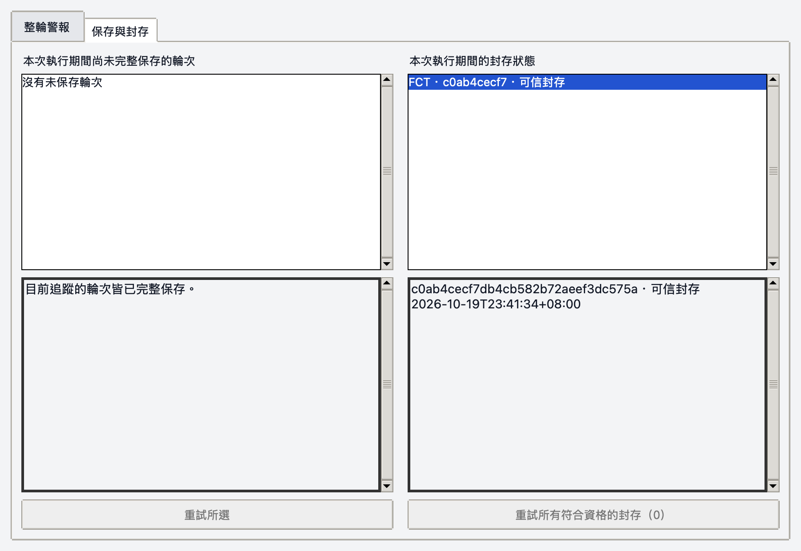
歷史事件查詢與 App 診斷
歷史事件查詢從已保存的輪次事件及 App 事件讀取，不是依 SN 統計良率的生產報表。從「設定 → 事件與 Session」開啟；App 診斷也可由主畫面進入。
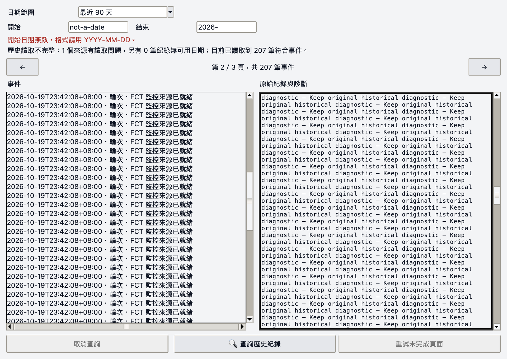
- 選擇起訖日期，再查詢；等待首批資料公布後即可讀取，後續批次可能仍在準備。
- 用分頁切換資料，選擇一筆查看詳細內容。後續頁尚未準備時依畫面等待，不要把載入中當成沒有事件。
- 同次查詢保留固定內容與順序；後來新增事件或來源清理不會偷偷改寫已公布頁面。要看最新事件，重新查詢。
- 可取消查詢；後續批次失敗時依畫面重試，已公布內容仍可閱讀。索引降級、來源無法讀取或日期異常可開查詢診斷核對。
- 切換語言保留查詢、頁碼、選取與閱讀位置；舊格式或原始診斷保留原文。
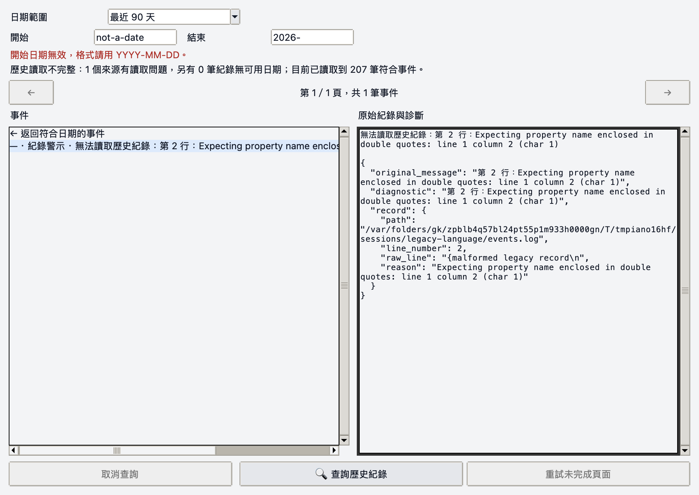
App 診斷
查看 App 事件與原始原因，適用保存失敗或文字刷新失敗。依目前故障使用「重試保存」或文字刷新重試；無待恢復項目時按鈕停用。App 診斷不等於各產品的測試失敗分析。
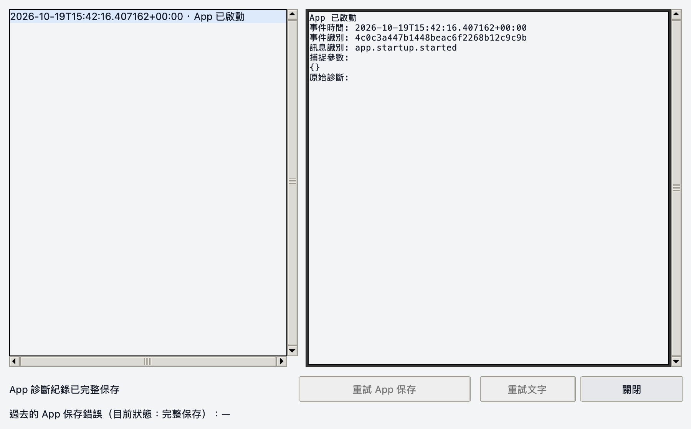
輪次紀錄保存與清理
⚙️ →「保存期限」設定全域保存天數（正整數），保存後以畫面有效值為準。期限從可信的封存時間起算，不是每次查看的時間。未結束、待確認、保存未完成或不具可信封存條件的輪次不應當作一般過期輪次刪除。
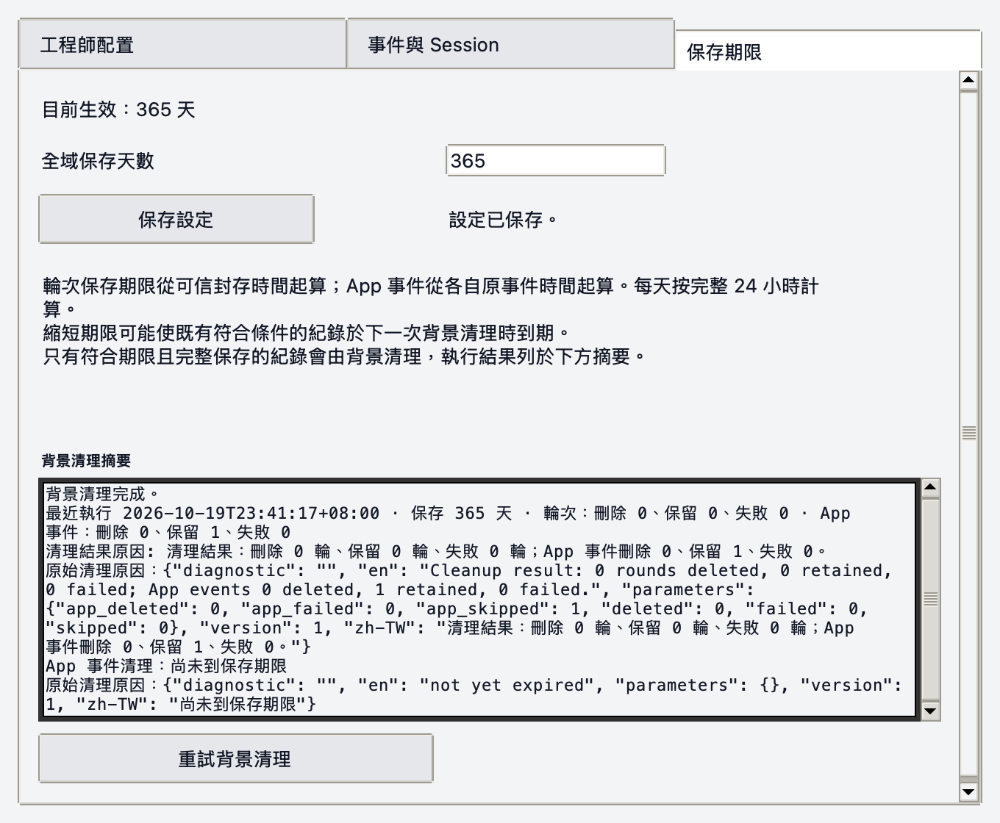
清理摘要顯示掃描／刪除／保留／失敗等處置及原因，無資料與清理失敗要分開判讀。此功能管理本工具輪次紀錄；不清理測試平台原始 Log、工程師配置、偏好或人工匯出檔。App 事件共用全域保存天數，但從各自原事件時間起算；輪次則從可信封存時間起算。
歷史實機結果對照
下列為 2026-09-11 舊版產線照片，僅保留通道／Thread 與結果的實機對照。畫面與舊七格排列不代表目前 UI；配置可自訂映射，現場以有效配置為準。
下列照片將測試機 HMI 與 B518 Log Solution 並列。TE 應同時確認通道、產品 SN、結果與頂端 KVM 色帶是否一致；照片僅展示畫面可見的結果，不用來推論 FAIL 原因。
FCT：測試機列號與 Log Solution Slot
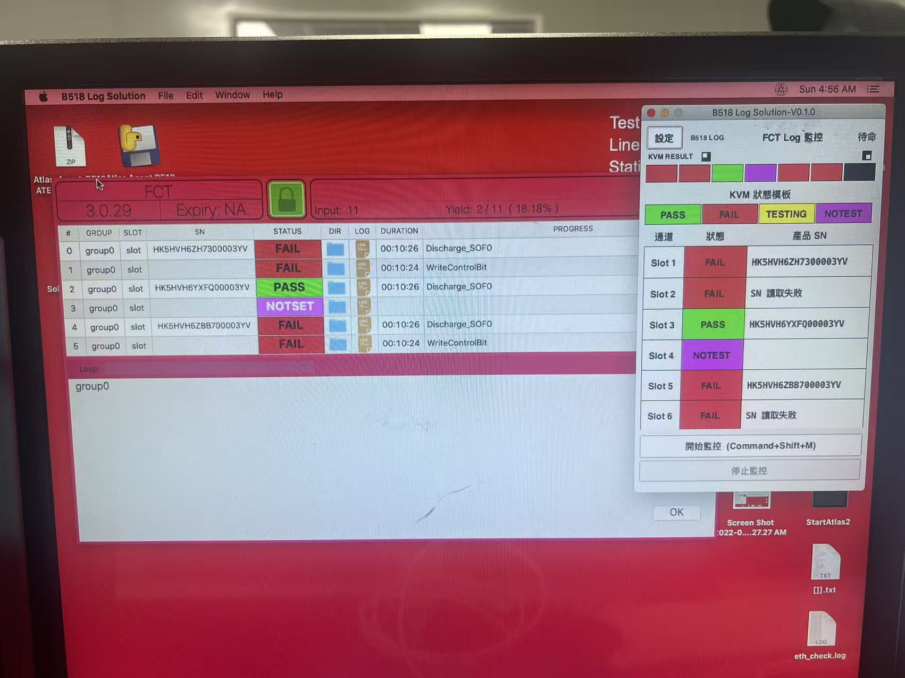
| 測試機列號 | Log Solution | 照片可見結果 | 產品 SN 顯示 |
|---|---|---|---|
| 0 | Slot 1 | FAIL | HK5HVH6ZH7300003YV |
| 1 | Slot 2 | FAIL | SN 讀取失敗 |
| 2 | Slot 3 | PASS | HK5HVH6YXFQ00003YV |
| 3 | Slot 4 | NOTEST | 空白 |
| 4 | Slot 5 | FAIL | HK5HVH6ZBB700003YV |
| 5 | Slot 6 | FAIL | SN 讀取失敗 |
照片中測試機第 3 列使用 NOTSET，Log Solution 顯示 NOTEST；兩者在此對照中都代表該通道沒有測試結果。
BT：測試機 Thread、CSV 與 Log Solution Slot
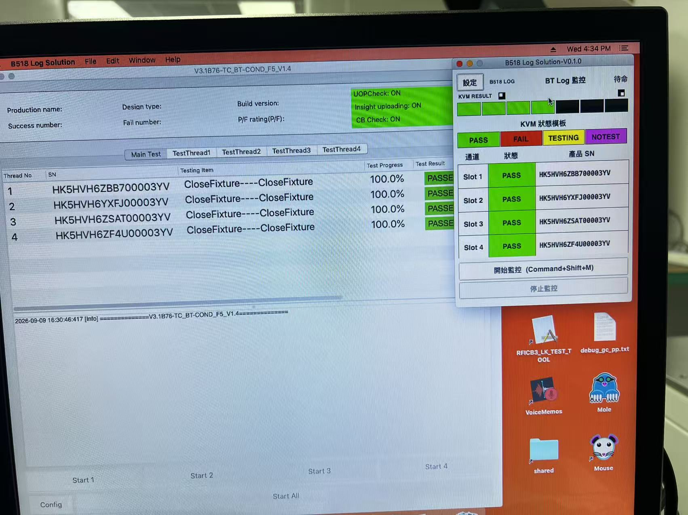
| 測試機 | TestData CSV | Log Solution | 照片可見結果 |
|---|---|---|---|
| TestThread 1 | Thread0 | Slot 1 | PASSED / PASS |
| TestThread 2 | Thread1 | Slot 2 | PASSED / PASS |
| TestThread 3 | Thread2 | Slot 3 | PASSED / PASS |
| TestThread 4 | Thread3 | Slot 4 | PASSED / PASS |
回報與保存證據
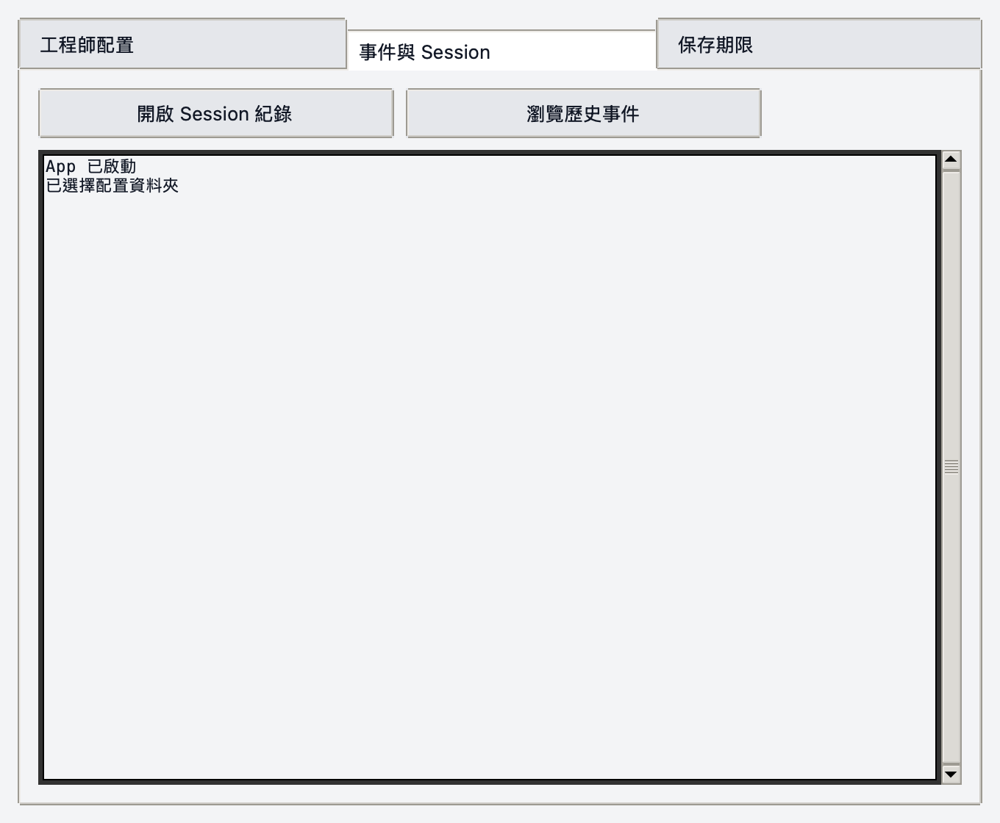
透過「開啟 Session 紀錄」取得資料夾；常用檔案包含 session.json、events.log、results.csv，輪次稽核另有自己的保存資料。Session 不會複製原始測試 Log。回報時另外附來源 Log，且先記下發生時間、版本、專案／機型與 round_id。
資料流與狀態責任
Adapter 解析平台 Log 與來源證據；RoundCoordinator 統一處理輪次、期限、衝突、停止、取消及結果可用性；UI 使用共同快照更新畫面。App 事件、輪次稽核、Session 保存完整性與產品 PASS／FAIL 是不同判斷。
| 模組 | 用途 |
|---|---|
machine_profiles.py | 版本化配置、驗證、遷移與保存。 |
monitoring_round.py | 共同輪次協調與事件。 |
log_monitoring.py / platform_registry.py | 來源監控、平台解析與擴充點。 |
kvm_display_contract.py | KVM 幾何與整輪標記契約。 |
historical_event_query.py | 固定查詢、分頁、診斷與恢復。 |
audit_records.py / round_retention.py / app_event_store.py | 稽核、保存／封存及清理。 |
核心不控制 ATE、Arduino、USB 或 TCP，也不在正常監控時自動截圖。手冊素材是開發用測試腳本額外產生，不增加產線 App 的截圖依賴。
文件版本與素材範圍
文件更新：2026-10-19；適用原始碼版本 0.1.0。新圖片記錄於 Photo/generated/manifest.json，包含來源 commit、工作目錄狀態、測試、語言、像素與 SHA-256。以 NSWindow.contentView 擷取實際 Tk 內容，不涵蓋原生系統選單、視窗遮擋、前景焦點或實體 KVM 驗收。
整個 Manual/ 可離線轉發，請連同 Photo、CSS 與 JavaScript 一起提供。圖片可點擊放大；列印使用目前語言。維護流程、情境清單與驗證結果在原始碼專案 docs/manual/，不放入轉發包。